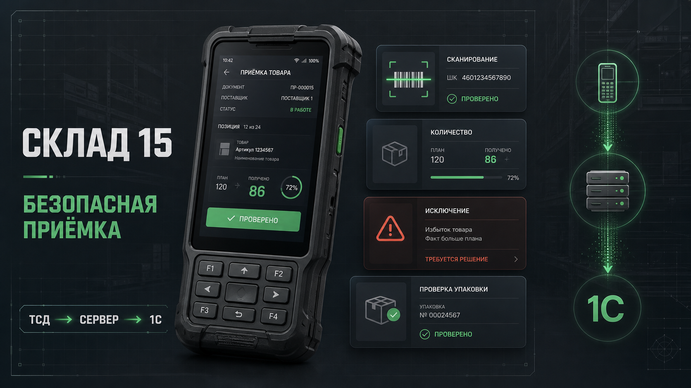

Собрать реальную картину
Соединяю контекст, ограничения, данные и поведение людей — чтобы команда видела причину, а не только симптом.
Product / UX Engineer · сложные B2B и сервисные продукты
Вхожу в предметную область, нахожу риск в операционном процессе и превращаю его в понятное, устойчивое и проверяемое решение — для пользователя, продукта и бизнеса.

Отобранные кейсы
Я работаю там, где интерфейс влияет на операционную устойчивость, стоимость поддержки и доверие к продукту.

Исследование и концепция для среды, где одна неясная операция может остановить поток товаров или исказить учёт.
Открыть кейсКонцепция для аварий, обращений и оплаты: один контур состояния вместо разрозненных каналов поддержки.
Открыть кейсМетод работы
Каждый этап оставляет команде артефакт, на который можно опереться: карту, модель, прототип или план измерения.
Соединяю контекст, ограничения, данные и поведение людей — чтобы команда видела причину, а не только симптом.
Работаю с состояниями, переходами и исключениями, чтобы продукт был устойчивым не только в идеальном сценарии.
Отделяю целевую метрику от достигнутого эффекта и заранее фиксирую, что команда должна проверить.
Что получает команда
Моя сильная сторона — переводить разрозненные технические детали в решения, которыми могут пользоваться и человек, и продуктовая команда.
Путь пользователя от контекста до результата — включая ошибки, ограничения и редкие, но дорогие случаи.
Что система знает, чего ждёт, что сохранила и каким должен быть следующий безопасный шаг.
Повторяемые блоки и правила, которые удерживают единый смысл на разных экранах и в разных каналах.
Факты, сигналы и гипотезы, превращённые в решения и конкретный план проверки.
Для задач, где важна глубина
Подключусь, если продукт сложный из-за процессов, данных, технических ограничений или цены ошибки — и помогу превратить эту сложность в управляемое решение.